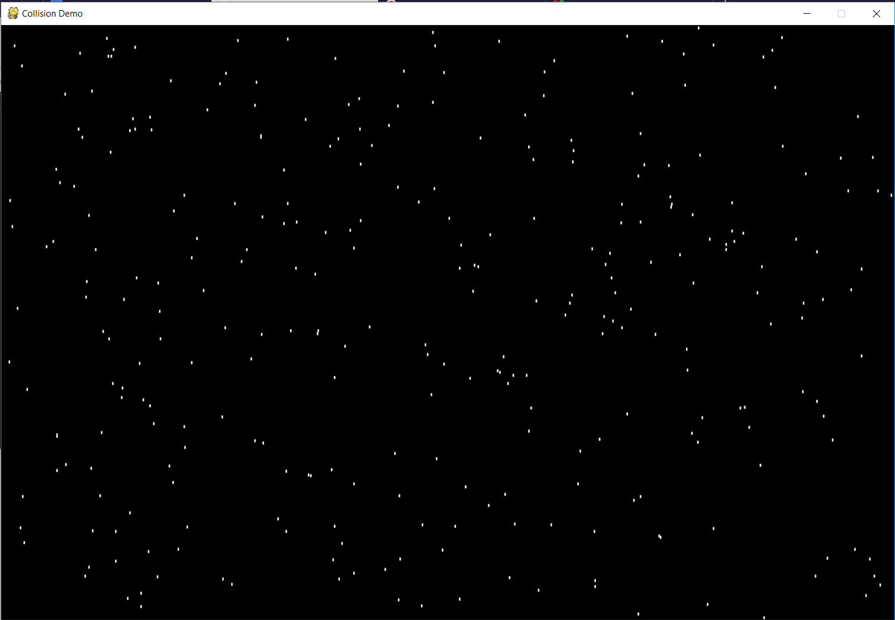
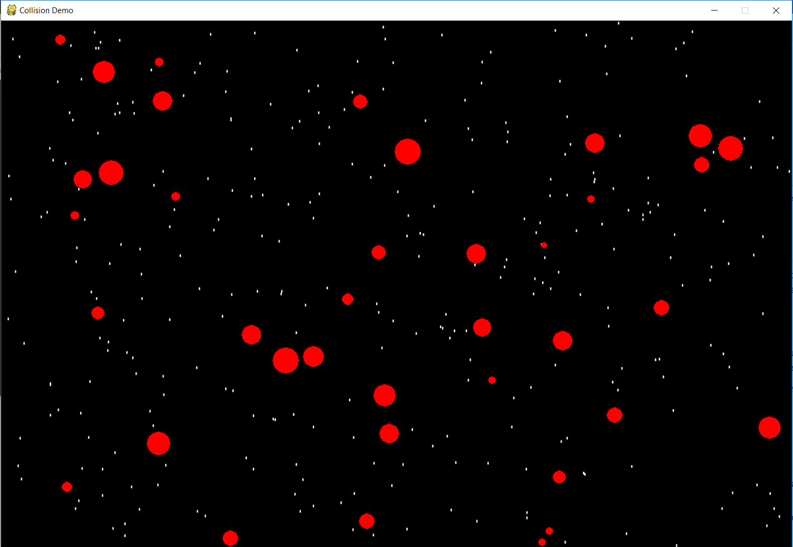
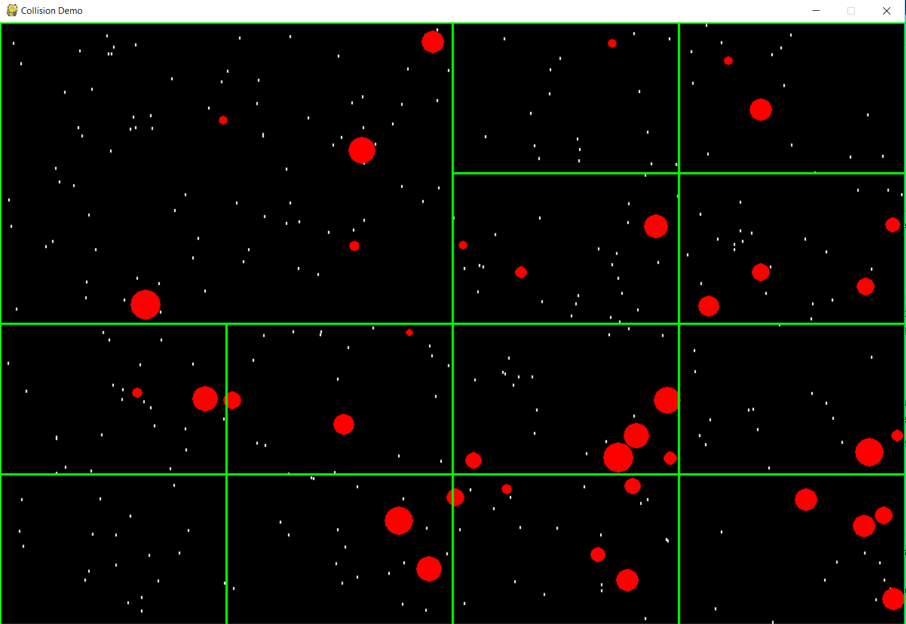
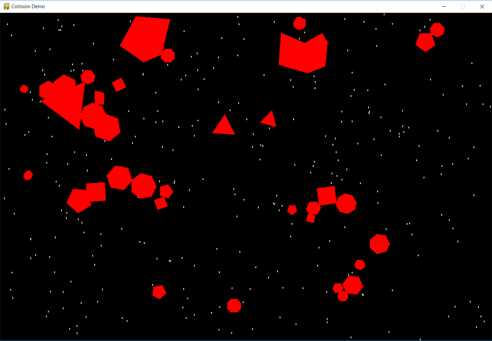
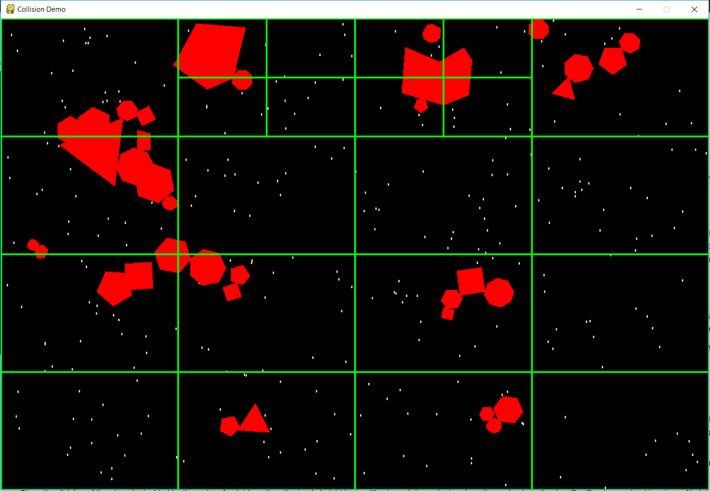

Collision Tech Demo
Requirements
Trailer
Trailer
Executable application link
Executable
Source code repo
Source code is present in code in main repo
Code documnetation
Documentation
Instructions for running python application
- Pull repo from link provided above
- Install pygame in python enviorment
- Run "python demo.py" from command line
Instructions for running executable
- Pull zip file from link provided above
- Extract zip file contents, it contains Assets folder, dll and .exe
- Assets folder contains pol.txt which is used to generate polygons
- Double clicking the exe should run the game
Keyboard input events for application
- Press 1 to enter Polygon mode
- Press 2 to enter Circle mode
- Press a to add objects(circle/polygon)
- Press d to display Quad Trees
- Press r to reset. Reset will clear circles or polygons from the screen
Algorithms used in development
- Regional Quad Tree for spatial parition of screen
- Find nearest objects using Quad Tree for collision detection for any shape(circle/polygon)
- Polygon-polygon collision detection using Welzl's algorithm and Seperation Axis Theorem(SAT)
- Create minimum bounding circle for polygon, check for collision between minimum bounding circles of polygons first
- If Minimum bounding circles collide then check for collision using SAT
- For reference: Algorithms
Screenshots




